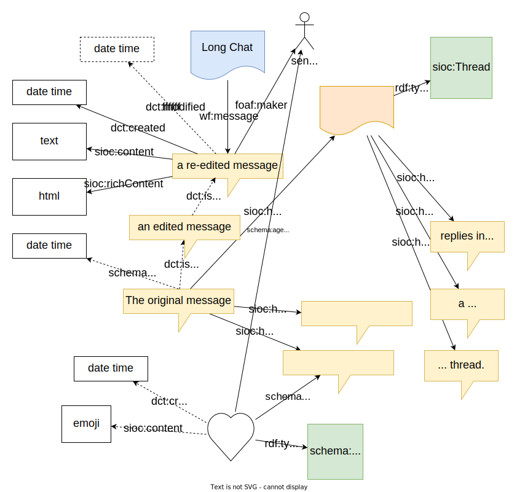
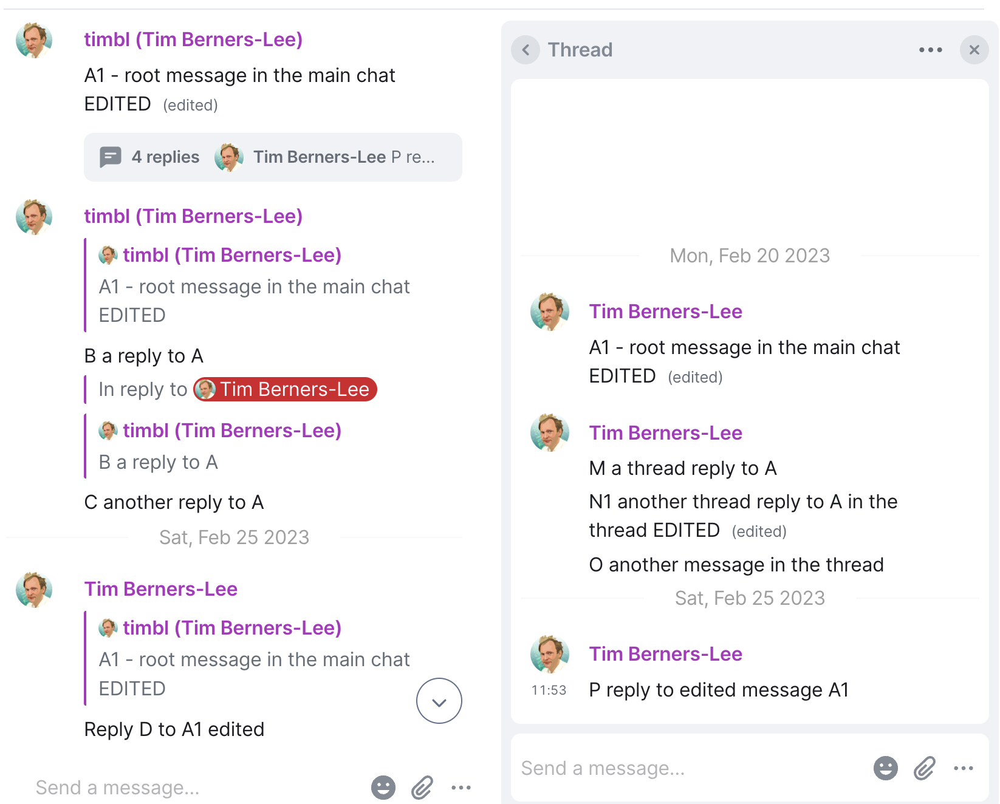

Solid Chat
Version 1.0.0, Editor’s Draft, 2023-08-21
More details about this document
- This version
- https://solid.github.io/chat/
- Editors
- Tim Berners-Lee
- Contributors
- Hadrian Zbarcea
- Created
- Repository
- GitHub
- Issues
- Language
- English
- License
- MIT License but all code snippets are in the public domain, CC0.
- Document Status
- Editor’s Draft
- Policy
-
- Rule
- Offer
- Unique Identifier
- https://solidproject.org/TR/chat#document-policy-offer
- Target
- https://solidproject.org/TR/chat
- Permission
-
- Assigner
- Solid Organization
- Action
W3C License. Copyright © 2022-2023 W3C. All code snippets public domain.
Abstract
Status of This Document
This section describes the status of this document at the time of its publication.
This document was published by the Solid Project as an Editor’s Draft. The sections that have been incorporated have been reviewed following the Solid process. However, the information in this document is still subject to change. You are invited to contribute any feedback, comments, or questions you might have.
Publication as an Editor’s Draft does not imply endorsement by the W3C Membership. This is a draft document and may be updated, replaced or obsoleted by other documents at any time. It is inappropriate to cite this document as other than work in progress.
This document was produced by a group operating under the W3C Community Contributor License Agreement (CLA). A human-readable summary is available.
Introduction
This section is non-normative.
A solid chat channel provides functionality similar to the functionality of chat protocols like IRC channels and Matrix rooms, and like platforms such as Slack, WhatsApp chat, and so on. Anyone can host a chat on their pod, and invite others to join (or not). Those who are allowed to participate in the channel are given Append mode access to a part of the pod where they can create new chat files and add messages to existing ones. Deletion and modification of messages are done not by changing the existing message, but by appending more information to note that it has been edited or deleted.
Apart from the messages themselves, which are in dated directories (LDP containers) there is preferences information controlling the display format and options and a list of those participating.
This specification is part of the work called for by the The Chat - Instant Messages item in the Solid Verticals Roadmap. It is a client-client specification, in that the pod server does not need to be aware of it at all. The clients - Solid Apps - use it to make the chat data interoperable across different apps.
Terminology
This section is non-normative.
This document uses terminology from the Solid Protocol [SOLID-PROTOCOL] and WebID [WebID] specifications. When terminology is used from these specifications it is linked directly to them.
- WebID
- A WebID is a URI with an HTTP or HTTPS scheme which denotes an Agent (Person, Organization, Group, autonomous software agent (bot), etc.). For WebIDs with fragment identifiers (e.g. #me), the URI without the fragment denotes the Profile Document. For WebIDs without fragment identifiers an HTTP request on the WebID returns a 303 with a Location header URI referring to the Profile Document.
Namespaces
| Prefix | Namespace | Description |
|---|---|---|
rdf |
http://www.w3.org/1999/02/22-rdf-syntax-ns# | [rdf-schema] |
solid |
http://www.w3.org/ns/solid/terms# | Solid Terms |
vcard |
http://www.w3.org/2006/vcard/ns# | [VCARD-RDF] |
schema |
http://schema.org/ | schema.org |
meeting |
http://www.w3.org/ns/pim/meeting# | Meeting ontology |
wf |
http://www.w3.org/2005/01/wf/flow# | Workflow ontology |
Conformance
All assertions, diagrams, examples, and notes are non-normative, as are all sections explicitly marked non-normative. Everything else is normative.
All shapes are normative, though they open: they allow other data to be added.
Notes in this document are not normative, are shown like this:
This is a note.
Examples in this specification are introduced with the word "for example" or are set apart from the normative text like this:
Example 1
This is an example.
Brief History
On the W3C website, Internet Relay Chat (IRC) logs have been stored in RDF form, for example by RRSAgent, for many many years. The pre-Solid SWAP and Tabulator projects at MIT/CSAIL and collaborators made a chat system which used the read/write/live aspects of the data stores they were developing to make two forms of chat. One (ShortChat) was a simple chat in which all the messages were stored in the same resource. The other was a chat channel which stored data in YYYY/MM/DD dated subfolders much like directly writing a log of an IRC channel. The SolidOS project adopted both of these, but it was felt that difference between them was not helpful, and the short chat should be dropped in favor of the long chat. The LongChat implementation functionality included message deletion and editing, but not replies or threads. It was used to store a pod-based reference copy of the Gitter chats around which a lot of the open source collaborative world revolved. This used a gateway which imported Gitter chat into Solid using the Gitter API. Other chat implementations at that time included Jackson Morgan's liqidChat. In time Gitter abandoned their API and switched to the Matrix protocol, which is a common chat protocol. The Solid community then switched the gateway to the Matrix protocol. Meanwhile, Matrix were adding threads to their system, and so at that stage both the gateway and the SolidOS client implementation were updated to support threads.
Chat Channel
This document describes the structure of the data in a chat channel,
the main class of which is LongChat.
The chat data is a set of RDF triples - linked data links.
It also suggests and sometimes requires specific URIs to be used for different structure.
When reading a chat channel, where there are links, those must be followed,
and no assumptions made about the URIs.
An exception is the YYYY/MM/DD date structure for day chat files,
where the URI must be created from the UTC date of the message.
A chat channel is all built inside a single folder (LDP Container) in a pod.
Let us call the URI of that folder -- less its final '/' -- $ROOT.
It could be say, https://alice/example.org/Bob/OurChat
Developers must never make assumptions about where a chat channel is
stored as chats are used within other apps (such as issue trackers and meetings)
which create the container for them.
Within that folder, the main channel is normally $ROOT/index#this

A simple Long Chat instance
A simple Long Chat instance
# in $ROOT/index.ttl
@prefix : <#>.
@prefix dc: <http://purl.org/dc/elements/1.1/>.
@prefix meeting: <http://www.w3.org/ns/pim/meeting#>.
:this
a meeting:LongChat;
dc:title "Chat about this example" .
Chat Message
Here is an example message:
An example message
<../../../index.ttl#this> meeting:message :message95487593 .
:message95487593
dct:created "2023-02-20T21:36:09Z"^^xsd:dateTime;
sioc:content """Hello world!""";
foaf:maker <../../../../../Person/alice-54d26c98db8155e6700f7312%3Agitter.im/index.ttl#this>.
Note that each message does not have an explicit type. This is just to save storage.
It does have, in the chat file, a meeting:messagelink from the channel to the message.
In the shapes, we use the class schema:Message but while there was also sioc:Post, nothing
we could find seemed to capture Chat Message perfectly.
Here is a shape a chat message must match:
Message shape
:MessageShape a sh:NodeShape;
sh:targetClass schema:Message;
sh:targetObjectsOf meeeting:message; # No can be other things
sh:closed false ; # different message systems may have all kinds of metadata
sh:property [
sh:path dct:created ;
sh:message "A chat message must have a creation date.";
sh:datatype xsd:dateTime; # Must be UTC
sh:count 1;
];
sh:property [
sh:path sioc:contents ;
sh:message "A chat message must have a contents.";
sh:datatype xsd:string;
sh:count 1;
];
sh:property [
sh:path foaf:maker ;
sh:message "A chat message must have one creator.";
sh:count 1;
];
sh:property [
sh:path dct:isReplacedBy ;
sh:message "A chat message can only have one replacement.";
dh:dataType schema:Message;
sh:maxCount 1;
];
sh:property [
sh:path schema:dateDeleted ;
sh:message "A chat message can only have one deletion date.";
dh:dataType xsd:dateTime;
sh:maxCount 1;
];
sh:property [
sh:path [ sh:inverse meeting:message ] ;
sh:message "A chat message should know its chat channel.";
sh:maxCount 1;
sh:dataType meeting:LongChat;
] .
The use of the properties of a message are as follows.
| Message Property | Use |
|---|---|
| dct:created | Mandatory UTC datetime the message is sent. |
| foaf:maker | Mandatory WebID of the message sender |
| sioc:contents | Mandatory unicode text of the message contents. |
| dct:isReplacedBy | Message editing is discussed below |
| schema:dateDeleted | Message deletion is discussed below |
| sioc:has_reply | Replies and threads are discussed below |
| Reverse meeting:message | Points from the chat channel to the message |
When writing a chat message to a chat file, an interactive chat client must use an HTTP PATCH method.
This is because the chat file may be being updated by other clients at the same time.
It also has the semantics that the resource is automatically created if it does not previously exist.
An interactive client must also watch the latest resource, the once corresponding to today's UTC date, to see if it changes. This is done using the Solid Live Update protocol.
Note that while in August 2023 this uses Web Sockets to listen for changes, in future it may use other notification/watch/listen protocols
Threads and Replies
Reply is a single message which is made in response to one original message. A thread is a series of messages in response too the same original message.
In the screenshot below (of the Element matrix client running on Mac) the designer has chosen to show the thread messages to one side while the replies are in line. On small screens, a thread typically takes the whole screen. This document does not define the user interface choices the designers make.
Example of a reply to an edited message:
An example non-thread reply
:YclVtjeT3mfFu-bD-XKbsKpRsaPaEW_7JCQVBEOCWvY
dct:created "2023-08-24T20:48:32Z"^^xsd:dateTime;
sioc:content "Looking at has_reply issue.";
sioc:has_reply :HxuJZPg18me8iX8sB18Nb2Oo9ObJwMLS7GRoJUfDV_Y;
sioc:id ;
foaf:maker ind:this.
:HxuJZPg18me8iX8sB18Nb2Oo9ObJwMLS7GRoJUfDV_Y
dct:created "2023-08-24T20:49:02Z"^^xsd:dateTime;
sioc:content
"""> <@alice:example.com> Looking at has_reply issue.
Normal reply to this should be done right""";
sioc:id ;
foaf:maker ind:this.
n4:this wf:message
:HxuJZPg18me8iX8sB18Nb2Oo9ObJwMLS7GRoJUfDV_Y,
:YclVtjeT3mfFu-bD-XKbsKpRsaPaEW_7JCQVBEOCWvY.
Note that in that example was converted from a Matrix message. The matrix client has added a quoted part of the message being replied to. Normal Solid clients should not do that, but should leave to the client UX to make it clear which message it is a reply to. Which could be positioning on the screen, could have an overlapped shadow rendering of that message, for example. This could also be in future a (receiving) user preference.
By contrast, here is an example of a thread:
An example thread
:GVu4AdmzBFnQvuLRvX0e8wc6oNOPdV0ki_qcJjDdbzk-thread
a sioc:Thread;
sioc:has_member
:2Bw5IeK9IeHnVNtzkOgAovUFix49JaociYdTO6G-F3w,
:FtmPJ0s6ezS4qCjisqqkqux1nAuSU7QnZrxQNBfwHSQ,
:Uf6jIvxd_j4l6JwWGke9rpLCPeQXHFVKWVWiJ2mmR_Q,
ch:tYDpio1b09O_JlXJ-KEgdLXNhc235bq32PkPNB_hou0 .
In general, a thread is a structure which must match this shape. It is stored in the same chat file as the message which is the first member of the thread. The member messages in the thread are sorted by the creation date.
Thread shape
:ThreadShape a sh:NodeShape;
sh:targetClass sioc:Thread;
sh:property [
sh:path rdf:type ;
sh:value sioc:Thread;
sh:count 1;
] ;
sh:property [
sh:path sioc:has_member ;
sh:dataType schema:Message;
sh:message "A thread must have a member or members.";
sh:minCount 1;
] .
When a thread membership link connects a thread and a message on different day files, the link is repeated in both resources so that it can be followed either way.
Deleted and Modified Messages
When a message is deleted or modified, the original is not in fact removed from the store.
It instead marked as deleted, or linked by dct:isReplacedBy to a new version of the message.
The UI is responsible for
showing the newest version, or suppressing the display.
When the original and replacement messages are in different chat files, then the
dct:isReplacedBy triple should be written to just the document of the original message.
An example edited message
# in 20/chat.ttl :
:GVu4AdmzBFnQvuLRvX0e8wc6oNOPdV0ki_qcJjDdbzk
dct:created "2023-02-20T21:35:54Z"^^xsd:dateTime;
dct:isReplacedBy ch:E6aFyaxMid9OajRNSCx3IL4Wc7nqIX-qLhXLj9HN2Wc;
sioc:content "A1 - root message in the main chat";
foaf:maker n2:this.
# in 25/chat.ttl :
:E6aFyaxMid9OajRNSCx3IL4Wc7nqIX-qLhXLj9HN2Wc
dct:created "2023-02-25T14:02:51Z"^^xsd:dateTime;
sioc:content " * A1 - root message in the main chat EDITED";
foaf:maker n2:this.
When a message is deleted, it is replaced by a message which is marked as deleted with a
dateDeleted property. For example:
An example edited message
@prefix c22: <https://alice.example.net/profile/card#>.
@prefix n6: <../../../index.ttl#>.
:Msg1692883560076
dct:created "2023-08-24T13:26:00Z"^^xsd:dateTime;
dct:isReplacedBy :Msg1692883677430;
sioc:content "24th - looking at deleted messages";
foaf:maker c22:me.
:Msg1692883677430
dct:created "2023-08-24T13:27:57Z"^^xsd:dateTime;
sioc:content "(message deleted)";
schema:dateDeleted "2023-08-24T13:27:57Z"^^xsd:dateTime;
foaf:maker c22:me.
n6:this wf:message :Msg1692883560076 .
Note that the form of a deletion is such that an implementation which knows about replacement
but does not know about schema:dateDeleted will do the right thing if
the content of the deletion message is something like "(message deleted)".
Edited messages may be further edited, as shown in the diagram.
{kind=link}
Edited messages may be deleted. Deleted messaged may not be edited.
Actions
A person responds with a social action (such as "like") on an existing message by writing the action into the same chat file as the message.
<#action0876> schema:agent <https://bob.example.com/profile/card#me> ;
a schema:AgreeAction ;
<http://schema.org/target> <#Msg1677678647433> .
<#action0888> schema:agent <https://alice.example.com/profile/card#me> ;
a schema:AgreeAction ;
scioc:contents "👍";
<http://schema.org/target> <#Msg1677678647433> .
<#action099> schema:agent <https://charlie.example.com/profile/card#me> ;
a schema:Action ;
scioc:contents "⭐️";
<http://schema.org/target> <#Msg1677678647433> .
They must give their own webid as the agent. Apps must not allow a different webid to be given.
The schema ontology has a few standard forms of action. Those should be converted into appropriate symbols or icons by the client.
| Subclass of Action | Typical Emoji |
|---|---|
| AgreeAction | 👍 |
| DisagreeAction | 👎 |
| EndorseAction | ⭐️ |
| LikeAction | ❤️ |
An emoji may also be given in the sioc:content of the action.
When an application uses an emoji to represent the Action, then if the content is given,
and it is a single valid emoji should be used.
An sender must not have both a subclass of schema:Action and an
emoji which is inconsistent from the table. A receiver must ignore any such inconsistent Action.
When no content is given, the receiver can pick an emoji as appropriate to the given subclass of Action, as in the table above.
Access Control
The access control for a chat channel must be set to reflect the user's wishes. One can recognize three roles: the owner of the channel who creates it, the participants who are allowed to write to it, and the viewers who are allowed to read it.
| Resource | Owner | Participant | Viewer |
|---|---|---|---|
| Channel file | RWAC | RWA | R |
| Root folder default | RWAC | RA | R |
| Day chat file | RWAC | RA | R |
Where RWAC means Read, Write, Append, Control.
Note that the sets of agents in each role may in fact be suggested or required by another app which creates the chat in a particular context, a larger system.
Preferences
User preferences for chat allow many things to be changed in how messages are presented to the user. Each preferences option can be set in each of three separate places, which take precedence in priority order.
- If set, the user's preference for this chat channel.
- Failing that, then the chat owner's preference for this chat channel
- Failing that, the user's personal preferences for chat channels everywhere
- Failing that, the UX designer of the app.
(One can imagine future chat clients requiring different again preference options -- say voice and speed for a voice based client.)
An example of user's preferences
@prefix c1: <https://alice.solidcommunity.net/profile/card#>.
@prefix c2: <https://bob.example.net/profile/card#>.
@prefix c3: <https://pod.charlie.example./profile/card#>.
:this a meeting:LongChat;
dct:author c1:me;
dct:created "2018-07-06T21:36:04Z"^^XML:dateTime;
dct:title "Our Chat channel";
wf:participation
:id1530912972126, :id1538415256782, :id1538415459106 .
:id1530912972126
ic:dtstart "2018-07-06T21:36:12Z"^^XML:dateTime;
flow:participant c1:me;
solid:expandImagesInline true;
ui:backgroundColor "#c1d0c8".
:id1538415256782
ic:dtstart "2018-07-07T11:16:12Z"^^XML:dateTime;
flow:participant c2:me;
solid:expandImagesInline false;
ui:backgroundColor "#ffccdd".
:id1538415509711
cal:dtstart "2018-10-01T17:38:29Z"^^xsd:dateTime;
wf:participant c3:me;
solid:colorizeByAuthor true;
solid:expandImagesInline true;
solid:inlineImageHeightEms 10;
solid:newestFirst true;
ui:backgroundColor "#c8f1f1".
In the exmample above, data in the main chat channel file, $ROOT/index.ttl#this,
show that Alice made the chat, and has background color #c1d0c8;
and Bob has turned off image expansion for his view of the chat,
and Charlie has turned on the image epansion with image height set to 10em,
has their messages sorted with the latest at the top,
and has then coloured by author.
Apart from that they have left the default.
The default settings in the table below are not normative.
| Preferences property | Effect | possible default |
|---|---|---|
solid:newestFirst | Messages are displayed with the most recent at the top of the display | False |
solid:colorizeByAuthor | Make the background color of each message be different for author. As specified by the author's preference, or by hashing their webid. | True |
solid:expandImagesInline | Expand images inline | True |
solid:inlineImageHeightEms | If images are expanded inline, then their height in Ems | Implementation dependent |
ui:backgroundColor | When messages are colors by the user sending them, this is the color for this user. | Implementation dependent |
@@ Add where the person-global and instance specific preference values stored.
Discovery
The RDF class used to register an instance of a chat chanel
is meeting:LongChat
Considerations
Security considerations
This section is normative.
Handling Rich Text
Whenever messages contain rich text in HTML form, or in markdown form which is converted into HTML and either stored in a pod or displayed in a browser or both, then great care must be taken to avoid injection attacks. Any user-provided HTML must be scrubbed for anything like embedded javascript URLs or the long list of vulnerabilities around injection of code into HTML. User-generated HTML content must be scrubbed BOTH before being stored and also when read from a pod before it is displayed.
Impersonation by unscrupulous users
It is left to each user to fill in their own webid as author of each message or action. This is a question of trust, as anyone else in the group with access could write an app to append a message with a different user's webId. There are two ways in which this is being addressed. One is that digital signature is used to provide assurance that the sender was indeed the one given in the message. Another is work on server-side shape filtering in which the writer's identity (and the date) would be checked or forced by the server.
Privacy considerations
This section is non-normative.
Typically when a user joins a chat where they allowed to contribute, then the chat app adds them to th list of participants. There participation is captured automatically. This is valuable to have the list of participants but some users might like to opt out and just lurk. On the other hand, other users might not want unregistered lurking to be possible, so a confirmation step could be made an option.
One useful function of chat software is to capture the participants as a group and then use that group in other collaborative tools, and in access control settings, and so on. So to join a chat could end up involving you in other opportunities.
Internationalization considerations
This section is non-normative.
This document has assumed left-to-right flow in all the examples, but clearly chat should also work in right-to-left or vertical cultures. Should there be an option for laying out the chat with left and right reversed?
The Solid system allows a user to put in their profiles (ans/or preferences) their abilities at natural languages. This can be picked by the implemntation and used to select the language of the UI, and possibly even to offer to translate the messages of the chat.
Accessibility Considerations
This section is non-normative.
As chat is a ubiquitous functionality in collaborative systems, and in the world, being able to partcipate in chat independent of ability or disability is of course essential. A few points follow.
- All the usual techniques, ideas, and guidelines apply as any web app, all apply.
- Chat is often used in a mobile context, and may switch between small-screen and large-screen devices, and so real-time adaptation is valuable.
- Completely separate implemntaions using for example conversational interfaces and/voice can be built and interoperate through this specification with different apps used by differently able people.
- Implementing the user prefences for customization of the user interface is an important for accessibility
- Developing cross-app common user prefences allows customization of the user interfaces of all the apps.
- Text to speech and speech to text systems functionality is interesting.
References
Normative References
- [RDF-SYNTAX-GRAMMAR]
- RDF-SYNTAX-GRAMMAR. Fabien Gandon; Guus Schreiber. RDF 1.1 XML Syntax. 9 January 2014. W3C Proposed Edited Recommendation. URL: http://www.w3.org/TR/rdf-syntax-grammar/
- [RDFA-CORE]
- RDFA-CORE. Ben Adida; Mark Birbeck; Shane McCarron; Ivan Herman et al. RDFa Core 1.1 - Second Edition. 22 August 2013. W3C Recommendation. URL: http://www.w3.org/TR/rdfa-core/
- [RDF-SCHEMA]
- RDF Schema 1.1. Dan Brickley; Ramanathan Guha. W3C. 25 February 2014. W3C Recommendation. URL: https://www.w3.org/TR/rdf-schema/
- [TypeIndexes]
- Solid Type Indexes/cite>. Virginia Balseiro, Timea Turdean, Tim Berners-Lee, et al, Solid Organization, 2023 URL: https://solid.gihub.io/type-indexes/
- [RFC2119]
- Key words for use in RFCs to Indicate Requirement Levels. S. Bradner. IETF. March 1997. Best Current Practice. URL: https://datatracker.ietf.org/doc/html/rfc2119
- [RFC8174]
- Ambiguity of Uppercase vs Lowercase in RFC 2119 Key Words. B. Leiba. IETF. May 2017. Best Current Practice. URL: https://datatracker.ietf.org/doc/html/rfc8174
- [SHACL]
- SCHACL. Holger Knublauch; Dimitris Kontokostas. Shapes Constraint Language (SHACL). 20 July 2017. REC. URL: https://www.w3.org/TR/shacl/
- [ShEx]
- ShEx. Eric Prud'hommeaux; et al. Shape Expressions Language 2.1. URL: http://shex.io/shex-semantics/index.html
- [SOLID-PROTOCOL]
- Solid Protocol. Sarven Capadisli; Tim Berners-Lee; Ruben Verborgh; Kjetil Kjernsmo. W3C Solid Community Group. 31 December 2022. Version 0.10.0 URL: https://solidproject.org/TR/protocol
- [turtle]
- turtle. Eric Prud'hommeaux; Gavin Carothers. RDF 1.1 Turtle. 9 January 2014. W3C Proposed Recommendation. URL: http://www.w3.org/TR/turtle/
- [VCARD-RDF]
- vCard Ontology - for describing People and Organizations. Renato Iannella; James McKinney. W3C. 22 May 2014. W3C Note. URL: https://www.w3.org/TR/vcard-rdf/
- [WEBID]
- WebID 1.0. Andrei Sambra; Stéphane Corlosquet. W3C WebID Community Group. 5 March 2014. W3C Editor’s Draft. URL: https://www.w3.org/2005/Incubator/webid/spec/identity/
Informative References
- [COGA-USABLE]
- Making content usable for people with cognitive and learning disabilities. Lisa Seeman-Horwitz; Rachael Bradley Montgomery; Steve Lee; Ruoxi Ran. W3C. 11 December 2020. W3C Working Draft. URL: https://www.w3.org/TR/coga-usable/
- [PRIVACY-PRINCIPLES]
- Privacy Principles. Robin Berjon; Jeffrey Yasskin. W3C. 12 May 2022. W3C Group Draft Note. URL: https://www.w3.org/TR/privacy-principles/
- [SECURITY-PRIVACY-QUESTIONNAIRE]
- Self-Review Questionnaire: Security and Privacy. Theresa O'Connor; Peter Snyder. W3C. 23 March 2021. W3C Note. URL: https://www.w3.org/TR/security-privacy-questionnaire/
- W3C Accessibility Guidelines (WCAG) 3.0. Jeanne F Spellman; Rachael Bradley Montgomery; Shawn Lauriat; Michael Cooper. W3C. 21 January 2021. W3C Working Draft. URL: https://www.w3.org/TR/wcag-3.0/